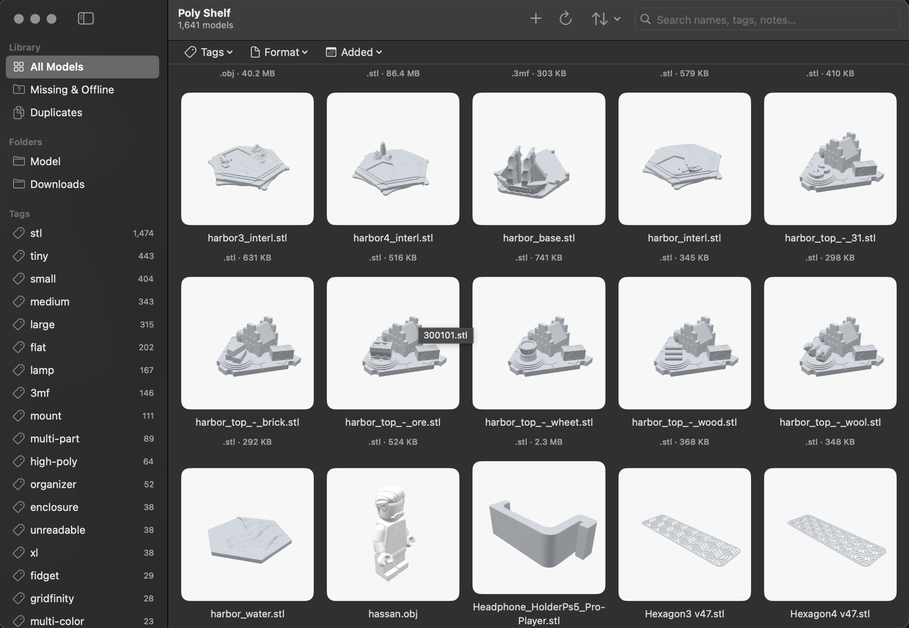
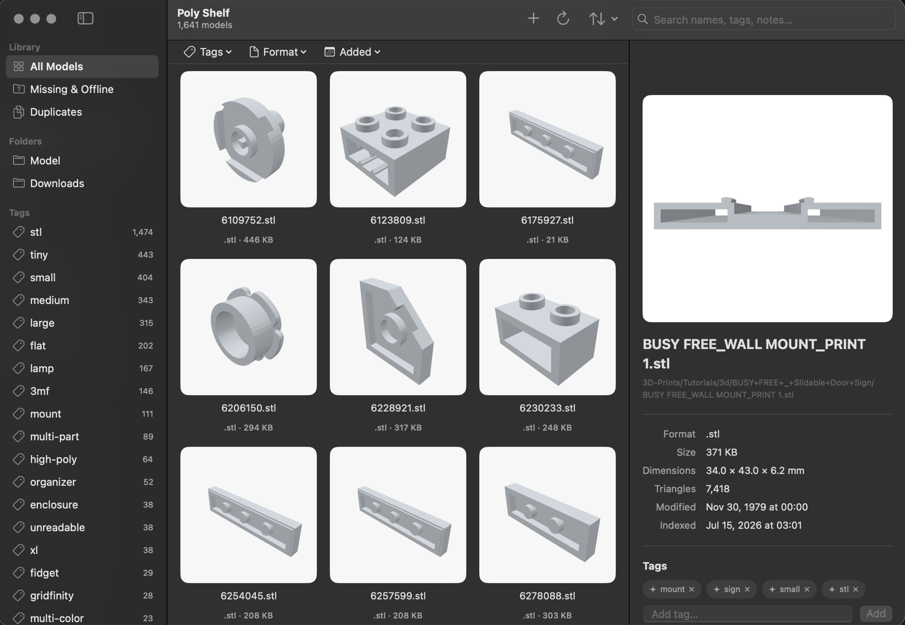

Poly Shelf is a native macOS app for people who 3D print. Point it at the folders you already have — it indexes, previews, tags, and searches thousands of STL, 3MF, OBJ, STEP, and GCODE files. And it never writes a byte back.
Free & open source · macOS 14 or later

Every library app wants to own your files. Import them, copy them, rename them, tuck them into its own little database. Poly Shelf can’t. Not won’t — can’t.
The app ships with Apple’s read-only sandbox entitlement, so a write to any folder you add is refused by macOS itself. There is no import step, no managed library, no “where did my file go.” Your folder structure stays yours; if you delete the app tomorrow, nothing changes.
That constraint isn’t a setting — it’s baked into the app’s signature, and any code path that could write to your files is treated as a bug:
.blend extraction, and QuickLook as fallbacks.Select a model and Poly Shelf tells you what it is: real dimensions in millimeters, triangle count, format, size — read from the geometry, not the filename.

Download, drag to Applications, right-click → Open on first launch
(the build is ad-hoc signed). If Gatekeeper insists:
xattr -dr com.apple.quarantine "/Applications/Poly Shelf.app"